01 · 그림으로 고릅니다
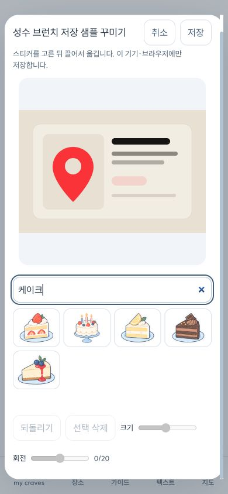
스티커 아래 이름을 숨겼습니다. 웹에서는 마우스 올림·키보드 초점에서, 폰에서는 선택한 항목의 이름을 표시합니다.
스티커 편집부터 기존 캡처 기능까지, 직접 조작한 화면과 확인하지 못한 범위를 함께 남깁니다.
앱에서 직접 꾸미기로그인한 Vercel 프로젝트 소유 계정을 확인하고 이번 수정 커밋의 작성자 정보를 맞춰 배포 차단을 해결했습니다. 기존 커밋과 전역 설정은 바꾸지 않았습니다.
스티커는 이 기기·브라우저에 저장합니다. 기기 간 동기화와 네이티브 앱 설치를 완료했다는 뜻은 아닙니다.
아래 자료는 앱에 포함된 장소·여행 샘플로 검증했습니다. 실제 항공권이나 개인 계정 데이터의 확인 결과로 해석하지 않습니다.
| 영역 | 결과 | 확인 범위 |
|---|---|---|
| 웹 검사 | 456개 통과 · 기존 3개 건너뜀 | 69개 묶음, 검사 생략·시간 제한 변경 없음 |
| 공통 검사 | 246개 통과 | 직전 동일 코드 검증 결과를 재사용합니다. |
| 모바일 검사 | 79개 통과 | 18개 묶음 · iOS 번들 생성 통과 |
| 타입·빌드 | 통과 | 공통·웹·모바일 타입 검사와 웹 운영 빌드 |
| 공개 앱 | HTTP 200 · 편집·복원 통과 | 390px 브라우저 폭, 가로 넘침 없음. 물리 iPhone Safari 검증은 아닙니다. |
| 남은 확인 | 전체 완료 판정 보류 | 지도 배경, 로그인 후 자동 출처·가이드, 신규 유료 AI 분석, 실제 상품 구매 링크, 계정 저장과 네이티브 기기 실행 |

스티커 아래 이름을 숨겼습니다. 웹에서는 마우스 올림·키보드 초점에서, 폰에서는 선택한 항목의 이름을 표시합니다.
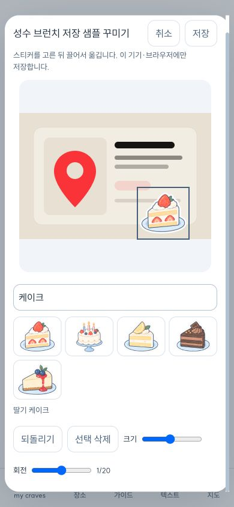
공개 앱의 390px 화면에서 케이크를 선택하고 끌어 옮겼습니다. 저장한 좌표는 75%·69.375%입니다.
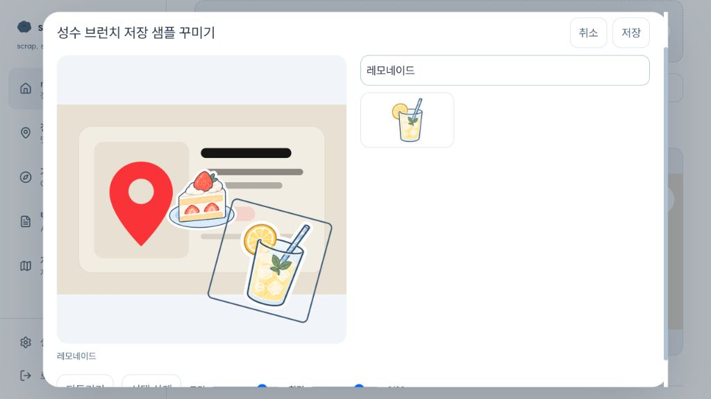
로컬 실제 앱에서 크기를 34%, 회전을 15도로 바꾸고 드래그와 방향키 이동을 확인했습니다.
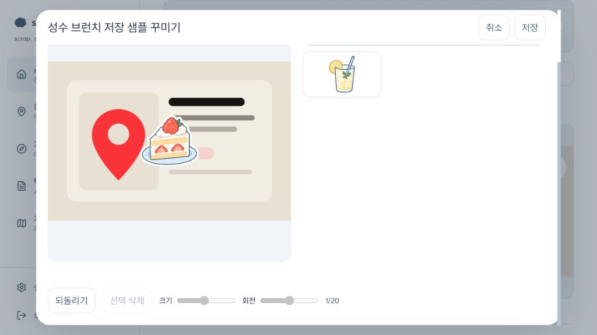
선택 항목을 지워 2개가 1개로 줄었고, 되돌리기로 다시 2개가 됐습니다.
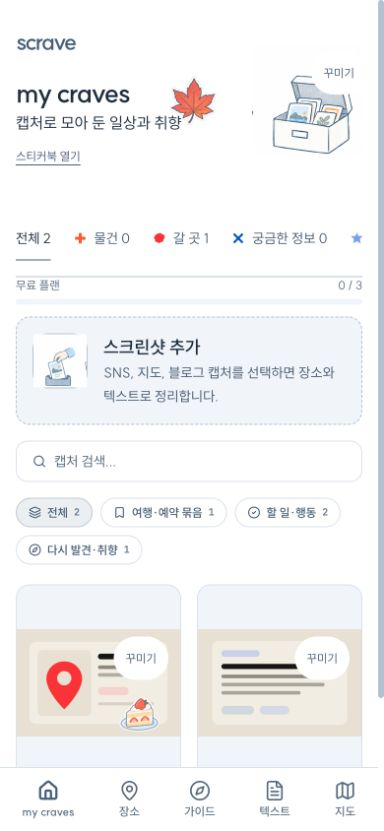
공개 앱에서 보관함에 단풍을 붙이고 새로고침했습니다. 카드의 케이크와 보관함의 단풍이 각각 유지됐습니다.
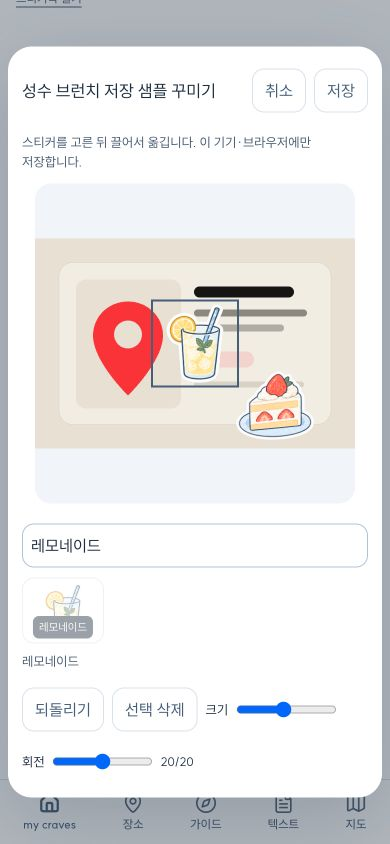
20개가 되면 추가 버튼이 비활성화됩니다. 취소 후에는 기존 카드 스티커 1개와 보관함 1개가 유지됐습니다.
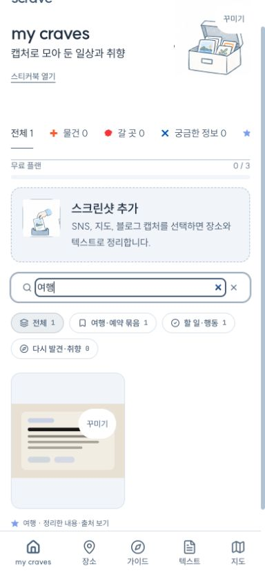
여행을 검색하면 여행 메모만 남고, 검색어를 지우면 전체 2개가 돌아옵니다.
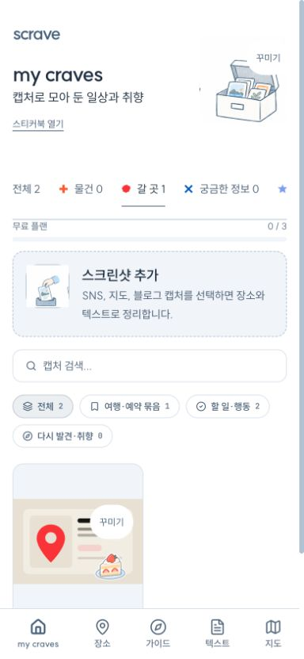
갈 곳 필터를 선택하면 장소 샘플만 남습니다. 필터와 꾸미기를 함께 사용할 수 있습니다.
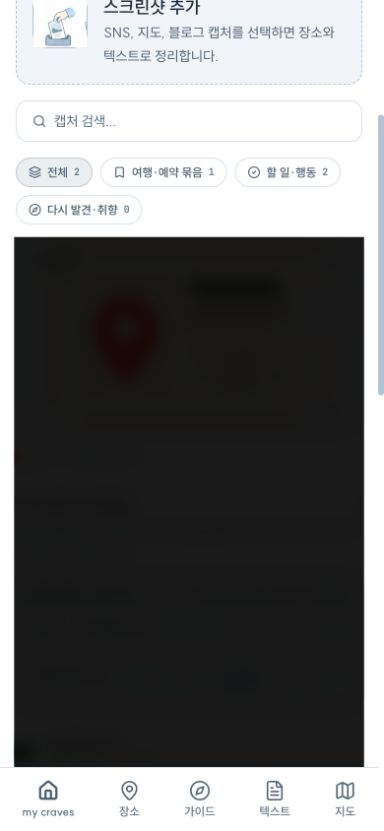
원본 확대 창이 열리고 닫힙니다. 장식은 원본 파일에 합성하지 않으므로 원본 확대에는 붙지 않습니다.
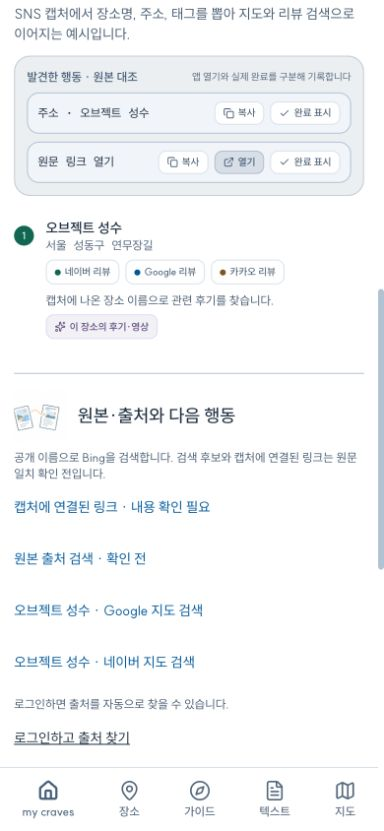
정리 내용과 지도·리뷰 검색 링크가 보입니다. 현재 비로그인 세션이라 자동 출처 검색은 로그인 안내에서 멈춥니다. 샘플 원문 링크는 실제 출처가 아닙니다.
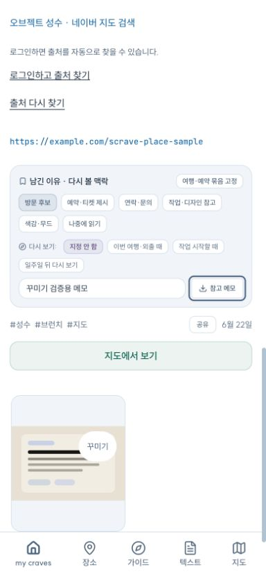
방문 후보와 메모 입력이 반영됐습니다. 페이지를 이동한 뒤 다시 발견·취향 개수도 유지됐습니다. 계정 DB 저장 검증은 별도입니다.
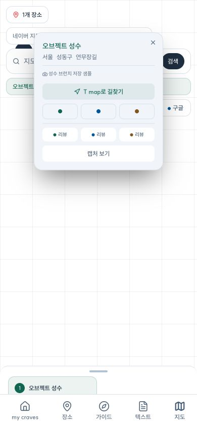
해당 장소 정보창과 외부 지도 링크는 열립니다. 이 검증에서는 배경 지도가 비어 있어 지도 렌더링을 통과로 판정하지 않았습니다.
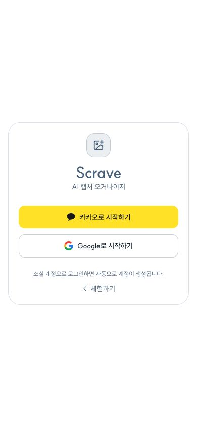
가이드 메뉴가 로그인 화면으로 이동합니다. 로그인 후 초안 생성·저장·공유의 실제 동작은 이번에 확인하지 못했습니다.
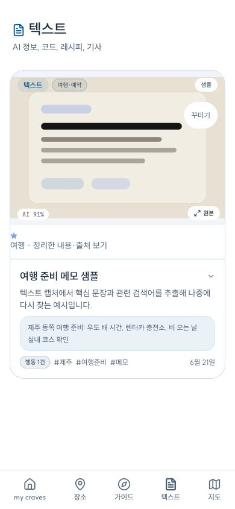
여행 메모의 원문·태그·분류와 꾸미기 버튼을 확인했습니다. 물건 구매 링크는 실제 상품 캡처가 없어 이번에는 확인하지 못했습니다.